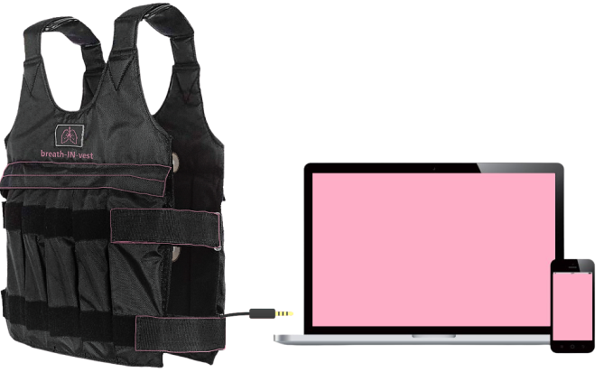

Plugin your vest!
Before using this product carefuly read the mannual, Do not take any medical decision without consulting a doctor.
Before using this product carefuly read the mannual, Do not take any medical decision without consulting a doctor.